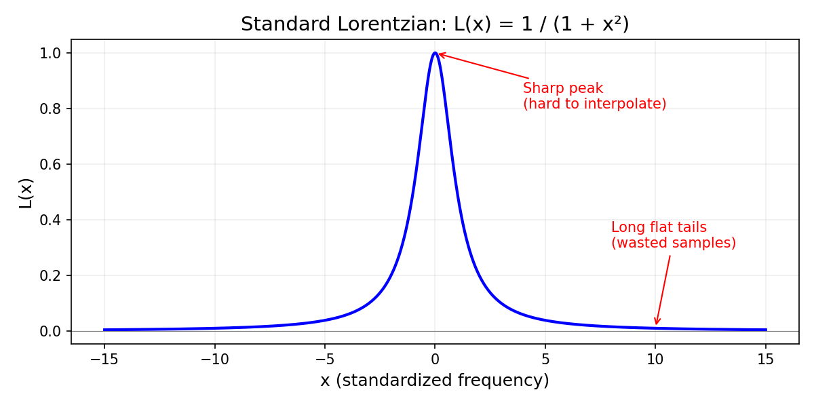
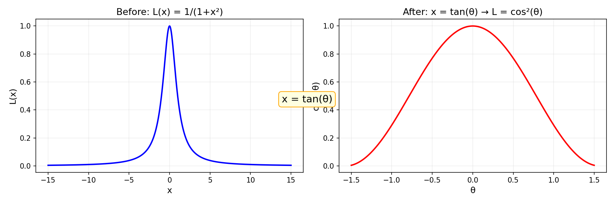
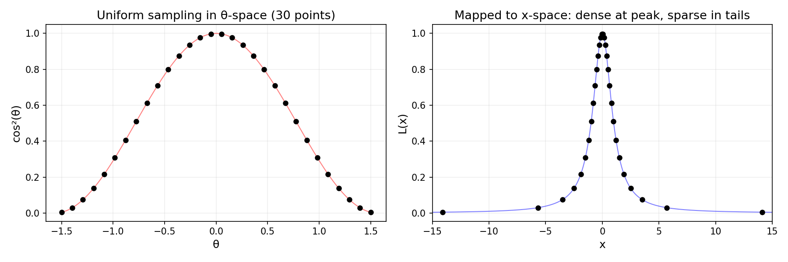
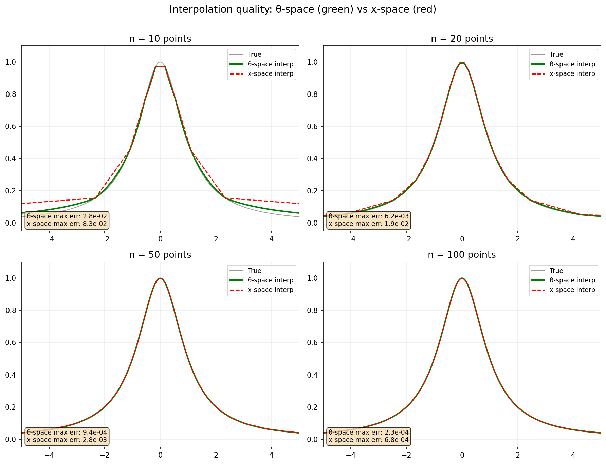
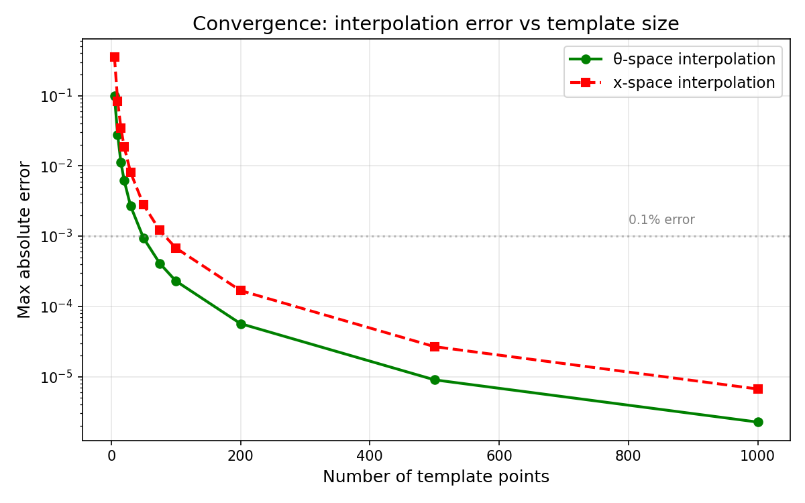
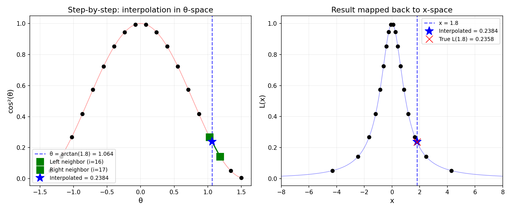

A guide to efficiently computing Lorentzian lineshapes for NMR spectrum simulation using the arctangent substitution and θ-space interpolation.
Every peak in an NMR spectrum is described by a Lorentzian lineshape. The standard Lorentzian (centered at zero with unit half-width) is:
$$L(x) = \frac{1}{1 + x^2}$$where $x$ is a standardized frequency measured in units of half-linewidth from the peak center. Any real NMR peak is just a shifted and scaled version of this universal shape.

The challenge for numerical simulation is clear from the shape: the function changes rapidly near $x = 0$ (the peak) but is nearly flat for $|x| > 5$ (the tails). If we try to interpolate this function using uniformly spaced sample points, we face a dilemma. Too few points, and we miss the sharp peak entirely. Enough points to capture the peak, and we waste most of them in the flat tails where nothing interesting happens.
The key mathematical insight is a change of variables. Let $x = \tan\theta$. Then, using the trigonometric identity $1 + \tan^2\theta = \sec^2\theta$:
$$L(\tan\theta) = \frac{1}{1 + \tan^2\theta} = \frac{1}{\sec^2\theta} = \cos^2\theta$$This is remarkable: the sharp, hard-to-interpolate Lorentzian in $x$-space becomes the smooth, gentle $\cos^2\theta$ in $\theta$-space.

The inverse transformation is equally simple: given any $x$, we recover $\theta = \arctan(x)$. Since $\arctan$ maps $(-\infty, +\infty) \to (-\pi/2, +\pi/2)$, the entire infinite $x$-axis is compressed into a finite $\theta$ interval.
Here is where the substitution becomes practically powerful. We sample $\theta$ uniformly in the interval $[-\theta_{\max}, +\theta_{\max}]$ (with $\theta_{\max}$ slightly less than $\pi/2$). At each $\theta_i$, we store the value $\cos^2(\theta_i)$. This is our template — just a list of numbers.
But when we map these uniform $\theta$ points back to $x$-space via $x_i = \tan(\theta_i)$, something interesting happens:

The $\tan$ function is slowly varying near $\theta = 0$ and rapidly increasing near $\pm\pi/2$. So uniform $\theta$ spacing automatically produces dense sampling near the peak and sparse sampling in the tails — exactly the distribution we want, without any explicit design effort.
This is not a coincidence. The density of sample points in $x$-space is proportional to $d\theta/dx = 1/(1+x^2) = L(x)$ itself. The sampling density matches the function's shape — the mathematical structure of the Lorentzian generates its own optimal sampling scheme.
The practical payoff is in how well we can reconstruct the Lorentzian from a small number of stored values. We compare two approaches:

The θ-space approach wins dramatically, especially at low point counts. With just 20 points, θ-space interpolation achieves 0.6% max error, while $x$-space interpolation is still at 3%. The advantage comes from interpolating $\cos^2\theta$ (a gentle curve) rather than $1/(1+x^2)$ (a sharp spike).

| Template points | θ-space max error | $x$-space max error |
|---|---|---|
| 10 | 2.8 × 10−2 | 5.0 × 10−2 |
| 20 | 6.2 × 10−3 | 1.7 × 10−2 |
| 50 | 9.4 × 10−4 | 2.8 × 10−3 |
| 100 | 2.3 × 10−4 | 6.8 × 10−4 |
| 1000 | 2.3 × 10−6 | 6.9 × 10−6 |
The convergence rate is $O(1/n^2)$, characteristic of linear interpolation on a smooth function. Higher-order interpolation (cubic splines) would converge faster, but linear interpolation in $\theta$-space is already so accurate that the added complexity is unnecessary.
Given a query point $x$ (a standardized frequency), the evaluation algorithm is:
Compute $\theta = \arctan(x)$. This maps any real number to the interval $(-\pi/2, +\pi/2)$.
The template stores $\cos^2(\theta_i)$ at $n$ uniformly spaced $\theta$ values from $-\theta_{\max}$ to $+\theta_{\max}$. Map $\theta$ to a floating-point index:
$$t = \frac{\theta + \theta_{\max}}{2\,\theta_{\max}} \cdot (n - 1)$$The integer part $i = \lfloor t \rfloor$ gives the left neighbor; $i+1$ is the right neighbor.
With $f = t - i$ as the fractional part:
$$\text{result} = (1 - f) \cdot \cos^2(\theta_i) \;+\; f \cdot \cos^2(\theta_{i+1})$$
For a peak with center frequency $\nu_0$ (Hz), half-linewidth $\gamma$ (Hz), and peak height $I$, the Lorentzian at frequency $\nu$ is:
$$L(\nu) = I \cdot L_{\text{standard}}\!\left(\frac{\nu - \nu_0}{\gamma}\right)$$So to evaluate using the template: (1) compute $x = (\nu - \nu_0)/\gamma$, (2) call the template's evaluate function to get $L_{\text{standard}}(x)$, (3) multiply by the peak height $I$.
The template is implemented as a struct with four fields:
pub struct LorentzianTemplate { cos2_values: Vec<f64>, // pre-computed cos²(θ) at each grid point theta_max: f64, // cutoff angle num_points: usize, // number of sample points x_max: f64, // tan(theta_max) — cutoff in x-space }
The constructor pre-computes the template once:
pub fn new(num_points: usize, theta_max: f64) -> LorentzianTemplate { let step = 2.0 * theta_max / (num_points as f64 - 1.0); let cos2_values: Vec<f64> = (0..num_points) .map(|i| { let theta = -theta_max + i as f64 * step; theta.cos().powi(2) }) .collect(); let x_max = theta_max.tan(); LorentzianTemplate { cos2_values, theta_max, num_points, x_max } }
And the core evaluation method performs the three-step algorithm described above:
pub fn evaluate(&self, x: f64) -> f64 { // Step 1: convert to θ-space let theta = x.atan(); // Beyond cutoff — negligible contribution if theta.abs() >= self.theta_max { return 0.0; } // Step 2: map θ to index space [0, num_points - 1] let t = (theta + self.theta_max) / (2.0 * self.theta_max) * (self.num_points as f64 - 1.0); let i = t.floor() as usize; if i >= self.num_points - 1 { return self.cos2_values[self.num_points - 1]; } // Step 3: linear interpolation let frac = t - i as f64; self.cos2_values[i] * (1.0 - frac) + self.cos2_values[i + 1] * frac }